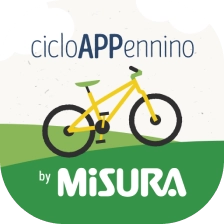

Realization period
Feb 2022 - Sep 2022
Clients
Misura, Colussi
Design toolkit
Adobe XD, Adobe Illustrator, Figma, Whimsical, User interview, UserTesting

Feb 2022 - Sep 2022
Misura, Colussi
Adobe XD, Adobe Illustrator, Figma, Whimsical, User interview, UserTesting
CicloAPPennino is a useful app for making people aware of and enjoying the wonders found along the route of the Apennine Cycle Route. This application was created in 2022 for the client Misura and with the collaboration of the Silverback communication agency.
In Italy more or less 5 million people use bicycles and Misura saw an opportunity in this. With the creation of a cycle route that runs along the whole of Italy for 2600 km in which there are 44 stage municipalities, as well as 300 points of interest, some problems naturally arise. To meet an average of 500 cyclists per route, certain needs must be satisfied and some questions arise naturally, the main one being: "how can we guide and inform cyclists?". This is the problem that CicloAPPennino tries to remedy.
I mainly dedicated myself to the process of user interaction with the map and with the points of interest encountered along the way, as well as the UI of the whole app and to the competitor research phase. During this project I also participated in sprints with the Silverback agency to be able to complete the project in a short time.
3x Project Manager
1x Software Analyst
2x UX/UI Designer
1x Graphic Designer
2x Back-end Developer
2x Front-end Developer
The objectives of CicloAPPennino, which we were designing, had to respond to the needs of the users who would travel the Ciclovia dell'Appennino, therefore both professional and non-professional cyclists.
think and create a map, and all the connected components, with which it's easy to interact especially when traveling
create a symbology that is easily recognizable and that creates a connection between the map and the detail pages
simplify and make navigation between the map and all the other internal pages fluid
create a UI that is a little different from that of the competitors and that follows the customer's instructions
During the first meetings, the managers and Silverback, which in addition to being a communication agency also assumed the role of intermediary between us and Colussi, illustrated the Apennine Cycle Route project to us in all its details, its future development and the choice of wanting to combine it with a mobile app dedicated to cyclists.
To begin bringing the project to life using the information they provided and reach its target numbers, my fellow designer and I collected data from professional and non-professional cyclists.
To give a face and a personality to the people who will use CicloAPPennino to orient themselves and discover points of interest, I analyzed the data collected by us, Colussi and Silverback and sent a survey to a targeted group of users to discover some other information from add to existing documentation and give a more cyclist-centric feel to the app.
In the post-session phase of the test I analyzed the data to understand the positive and negative aspects, what features users want and whether they would use the app while discovering the cycle route.
The cyclists interviewed usually use apps for their trips outside the city that help them orient themselves and discover points of interest but not always precisely and in offline mode. Furthermore, the lack of importance given to the choice of colors and components makes it difficult to read the app during the journey.
Result: the new app had to be practical and intuitive, therefore the map had to be optimized and quickly interpretable even during the journey and under sunlight, above all with a thoughtful use of colors and elements (icons, symbology of routes and points of interest, etc.)
Users did not always find pages dedicated to points of interest, and when they did manage to find them in some apps, the information was a little sparse and incomplete, especially because these points can be of different types.
Result: cyclists should know everything they encounter during their journey, therefore CicloAPPennino should have provided well-structured iconography and detail pages to be able to explain the points of interest in depth, from the typology to the description, up to the useful numbers and web links.
Some cyclists did not like the absence of a section dedicated to news, as they are very keen to be updated both on facts relating to the route (temporarily closed roads, weather reports, etc.) and on events to participate in.
Result: to meet this need, the app had to contain a section dedicated to news and events to always keep updated. This part is very important given the size of the cycle route which presents various events (entertainment and otherwise) in the different sections that compose it.
With the goal of creating a powerful but at the same time simple to use tool in mind, I focused in this phase of the research on understanding the functioning and optimization of the map, the protagonist of this app, especially on how it would be possible to search and consult the points of interest on the route.
We have reached a crucial phase of the project, the research has been done and the solutions were shared, analyzed and finally choices. So I began to dedicate myself to the construction phase of the map and the internal pages, transforming the sketches (made by both hand and by whimsical) born during the reasoning made with my colleagues.
During this phase we participated in several calls with Silverback to exchange feedback and materials and finally I made the final design with Adobe XD and, during the final phase, Figma (in view of future developments).
The creation of the first drawings aroused curiosity so we carried out a dozen user testing sessions to understand if the path we were taking was right. During this phase, users were the subject of qualitative research through usability tests, to understand the effectiveness and immediacy of the ideas we were developing.
Among the information present in the bottom sheet of a route selected on the map, we discovered that 65% of testers considered the "View on maps" command superfluous and also needed a way to filter the results.
Thanks to these considerations, the "View on maps" command has been eliminated, making the bottom sheet shorter and lighter, and a filter command relating to the displayed route has been added.
Too many choices on the Favorites page confused many testers. Initially, users could filter previously saved data through 2 items: Category and Type. This gave cyclists more choice but at the same time led in many cases to indecision and waste of time.
Therefore we have decided to replace these 2 selectors with simple tabs divided into Routes and Points of Interest, in order to streamline and speed up interaction with this page.
With the completion of the mid-fidelity prototypes, and their changes after the testing phase, my UX partner and I animated all the screens to make the app easier to understand for both the client and the Silverback agency. Sharing with the communication agency led to the discovery of other small problems that had not yet come to light.
The cycle route is full of useful and interesting things and it would be a shame to miss even one of them. For this reason I decided to make their identification easily visible on the map thanks to pins with icons that indicate the type of points of interest (monuments, places to eat, natural landscapes, etc.), as well as of course the main info on the route travelled.
The Point of Interest page can be considered as the co-protagonist of this app, so we decided to give it the right importance by providing it with a cover image and a carousel, the main information (description, data and useful links) and commands to: add it to your Favorites, to mark it as already visited and to view related news and events
The page with the list of routes has been made extremely intuitive to avoid the user having to enter each detail page just to find out the main info. In fact, it has been provided with a drawing of the route, name, length and points of interest of the path, and icons that show if the route is present among the favourites, if it has been visited and if there is news or events connected to it.
Two similar but at the same time different pages are those of news and events. The content is different but visually they are similar, in fact they always contain: a cover image, description, category, main data of the route involved and in addition the event page presents a label with the date of the happening which turns blue when the event is scheduled, and red if it has ended.
The ultimate goal of this project was to provide a useful virtual travel companion for cyclists of the Apennine Cycle Route. I identified and organized the success metrics and collected the statistics useful for validating the project through collaboration with the development team with whom we were able to validate the effectiveness of the app. The data obtained was very satisfactory, but what really excited us was the positive feedback from users who tested the final prototype.
CicloAPPennino was an opportunity to work with a very important client and a very large community such as that of cyclists. It was also a chance to improve my knowledge of the Agile methodology by collaborating with an external company.
The app was well received by the public after its release on Play Store and App Store although some minor bugs were identified. Taking advantage of the feedback from all over Italy, the customer decided to have us update CicloAPPennino with improvements especially regarding the homepage and interaction with the map. The new version is expected to be online by mid-2023.